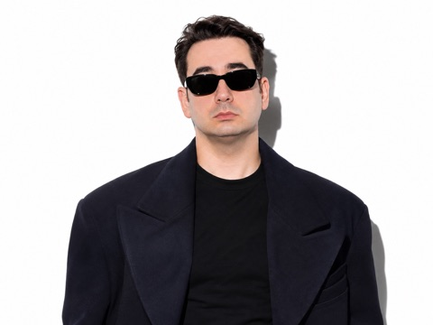
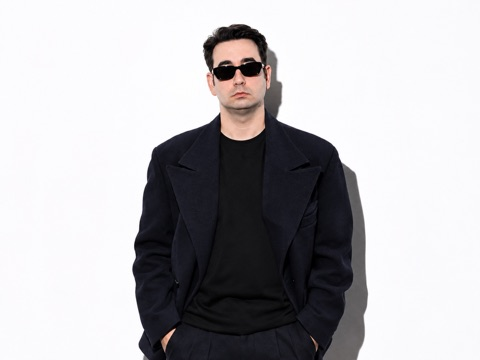

Тревога и стресс
Тревога, панические атаки, фобии, нарушения сна. Обсессивно-компульсивное расстройство (ОКР), генерализованное тревожное расстройство (ГТР), посттравматическое стрессовое расстройство (ПТСР) и комплексное ПТСР (КПТСР).
Психиатрия / Психотерапия
Разобраться в своём состоянии.
Найти опору. Сделать следующий шаг.


Я Антон Красноглазов, врач-психиатр и психотерапевт. Работаю с тревожными, аффективными и другими психическими расстройствами.
В основе моей работы — доказательная медицина, клиническая диагностика и внимание к тому, как состояние влияет на повседневную жизнь человека.
Консультация — возможность последовательно обсудить ваши переживания, уточнить причины трудностей и определить дальнейший план помощи.
Можно начать с того, что вас беспокоит. Название состояния и дальнейшие шаги обсудим на консультации.
Тревога, панические атаки, фобии, нарушения сна. Обсессивно-компульсивное расстройство (ОКР), генерализованное тревожное расстройство (ГТР), посттравматическое стрессовое расстройство (ПТСР) и комплексное ПТСР (КПТСР).
Депрессивное расстройство, рекуррентное депрессивное расстройство (РДР), биполярное аффективное расстройство I и II типов (БАР), дистимия.
Нервная анорексия, нервная булимия, компульсивное переедание.
Пограничное расстройство личности (ПРЛ).
Шизофрения и другие расстройства психотического спектра: дифференциальная диагностика.
Расстройства аутистического спектра (РАС) и синдром дефицита внимания и гиперактивности (СДВГ). Приём подростков с 16 лет и взрослых.
Диагноз и рекомендации определяются на консультации с учётом вашей истории и результатов обследования.
Основное образование, профессиональная переподготовка и повышение квалификации.
ФГБОУ ВО КубГМУ Минздрава России. Специальность «Педиатрия».
ФГБОУ ВО КубГМУ Минздрава России. Клиническая ординатура по специальности «Психиатрия».
«Терапевтическая резистентность в психиатрии и стратегии её преодоления».
Повышение квалификации по программе «Расстройства аутистического спектра у детей и взрослых».
Повышение квалификации по теме «Вопросы сексологии в психологическом консультировании».
Долгосрочная программа обучения КПТ: 120 академических часов, 6 модулей.
Повышение квалификации по программам:
«Клиническая психиатрия».
Повышение квалификации по программам «Дифференциальная диагностика шизофрении с другими психическими расстройствами» и «Диагностика и лечение биполярных расстройств».
ФГБОУ ВО КубГМУ Минздрава России. Профессиональная переподготовка по специальности «Психотерапия».
Не нужно подбирать «правильные» слова. Достаточно рассказать, что изменилось и что сейчас даётся труднее обычного.
Выбрать время приёмаОбсудим жалобы, их появление и изменения, сон, настроение, тревогу и повседневную жизнь.
Разберём предыдущий опыт лечения, принимаемые препараты и медицинские документы, если они у вас есть.
Вы сможете задать вопросы о заключении и рекомендациях. При необходимости обсудим обследование, лечение и повторную встречу.
Если есть — предыдущие заключения, выписки, результаты обследований и список препаратов с дозировками. Можно записать вопросы и основные изменения в состоянии.
Отзывы пациентов
Отзывы помогают другим людям выбрать специалиста.
Если вы уже были на приёме, можно поделиться своим
опытом на ПроДокторов.
Актуальное расписание, стоимость и условия приёма доступны при записи на сайте клиники.
Семейный доктор
Врач-психиатр, психотерапевт
Пациенты с 16 лет